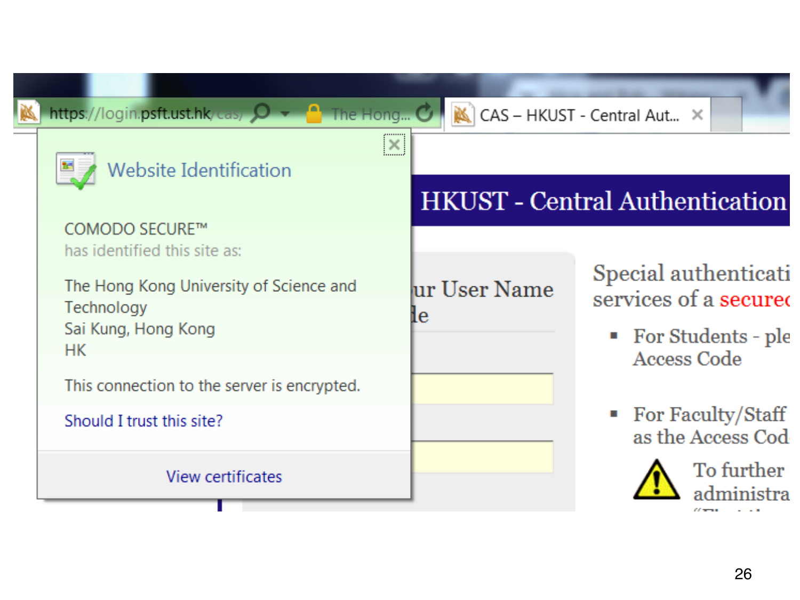

L1.14 · 第 26 页讲解原文
查看这一页课件

浏览器怎样显示证书验证结果
旧版浏览器访问学校认证站点的截图中，地址栏带 HTTPS 和锁图标，身份窗口显示网站机构、签发方 COMODO，以及连接已加密。
浏览器持有预先信任的根，验证服务器提供的证书，再把域名或机构身份显示出来。“View certificates” 是查看证书详情的入口，这里只用于解释界面，不要求执行按钮操作。
锁图标表示连接与证书验证状态，不能单独保证网页所有内容可靠，也不能代替核对通信对象。加密保护传输中的机密性，证书则绑定公钥与身份，两者的作用不同。
这张原课件历史截图展示了抽象信任链怎样出现在浏览器中，不代表该域名今天的状态、签发方或登录界面，也无需打开网站、输入任何账户信息。